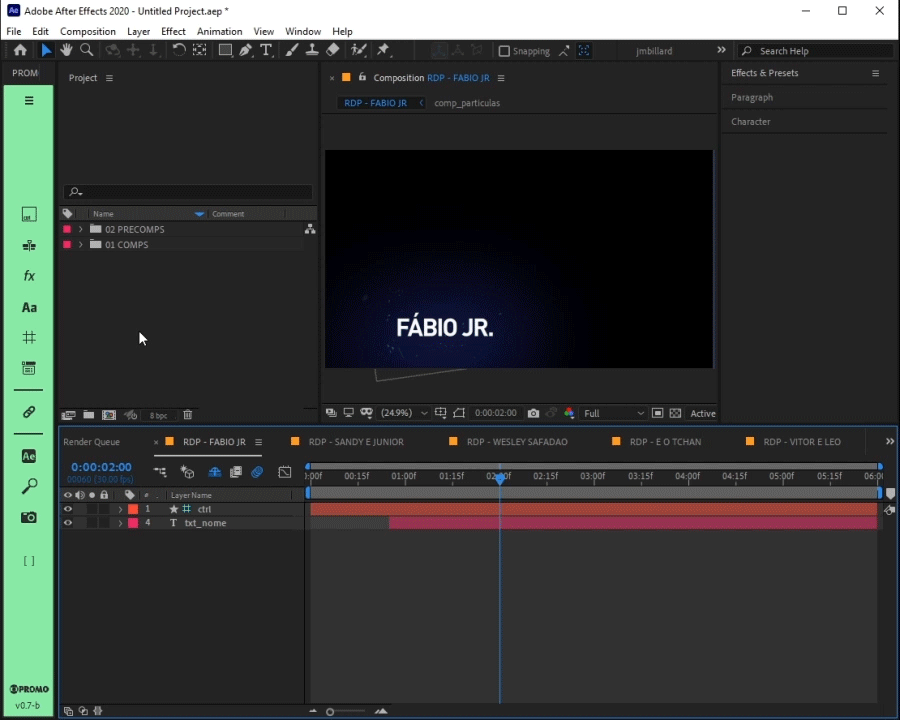

pt-BR ⚡ Ferramenta de preenchimento em massa de templates no After Effects ⚡
üìÇ pastas:
- templates: \\vfx-ml-sp.servicos.corp.tvglobo.com.br\VFX\imagem\drive_l\Fileserver_3\INSTITUCIONAL\_adm-designers\TEMPLATES\TEMPLATES PADEIRO\
- script: \\vfx-ml-sp.servicos.corp.tvglobo.com.br\VFX\imagem\drive_l\Fileserver_3\INSTITUCIONAL\_adm-designers\SCRIPTS FREE\O_PADEIRO
üìë O PADEIRO.jsx
após executar o script 'O PADEIRO.jsx':
o script executará as seguintes tarefas em ordem:
üìã exemplo de uso:

üö©
• confira sempre as composições criadas, seu conteúdo e o caminho do output.
• idealmente cada template deve possuir uma imagem '_preview.png' e um arquivo de configuração '_config.json' com as informações necessárias para o preenchimento correto do template selecionado.

üö©
• ao selecionar um template da lista, a interface do script se ajustará para exibir um preview, o campo de input e dicas, se disponíveis.
• apenas os templates podem ser selecionados na lista.
• apenas os arquivos com extensão '.aep', '.aet' e seus diretórios são exibidos na lista.\

üö©
• caso a imagem de preview não esteja disponível, um place holder será exibido em seu lugar.
• muitos templates conseguem exibir mais de um tipo de informação e o seu layout irá se adaptar para acomodar as mesmas.
üìã exemplo de arquivo de configura√ß√£o: "RODAPE CONVIDADO_config.json"
// "\n" representa uma quebra de linha. :)
{
"configName": "CONVERSA COM BIAL TARJA RODAPÉ CONVIDADO", // → nome da configuração
"exemple": "NOME CURTO\n\nNOME MAIOR\nCOM SOBRENOME\n\nNOME MAIOR\nCOM SOBRENOME\n---\nINFORMAÇÃO", // → texto preenchido de exemplo na janela de texto do input
"tip": "digite o texto em 1, 2 ou 3 linhas para nome e informação.\n\nuse 1 linha com '---' para separar nome e informação.\n\nuse 1 linha vazia para separar mais de 1 versão do mesmo template selecionado.\n\nuse os controles nos efeitos do layer 'ctrl'.", // → texto com as dicas de preenchimento
"compName": "RDP - CONVIDADO TEMPLATE", // → nome da comp a ser editada.
"prefix": "RDP", // → prefixo que o nome da comp editada receberá.
"refTime": 2, // → tempo, em segundos, do momento em que todas as infos preenchidas estão visíveis na comp.
"separator": "---", // → texto usado para separar as informações de tipos diferentes.
"textCase": "upperCASE", // → o tipo de caixa de texto que o template deve receber: "upperCASE", "lowerCase" ou "titleCase".
"inputLayers": [ // → lista com os layers editáveis da comp.
{"layerIndex": 4, "method": "textContent"}, // → índice do layer: 1, 2, 3, etc.
{"layerIndex": 5, "method": "textContent"} // → método: "layerName" renomeia o layer ou "textContent" preenche o conteúdo de um layer de texto.
],
"outputPath": "//10.193.48.13/promo_ber/BACKUP/artes/ARTES PARA EDICAO/CONVERSA COM BIAL/CONVIDADOS", // → caminho padrão do output.
"alpha": true // → aviso que o canal alpha é necessário.
}
üö©
• o 'input' é pré preenchido com dados genéricos disponíveis no arquivo de configuração do template selecionado apenas para exemplificar ALGUMAS possibilidades de preenchimento.
• sem um arquivo de configuração, não é possível preencher o template selecionado usando a janela de texto do 'input'.
• você ainda poderá IMPORTAR e PREENCHER MANUALMENTE o template no After Effects!.

üö©
• o export padrão é um arquivo '.mov' em 'QUICKTIME PRORES 422' para artes sem alpha ou '444 RGB+A' (com alpha STRAIGHT).\
üìã exemplo:
os input "cauã raymond", "CAUà RAYMOND" ou "cAuà raYMOnd" serão exibidos como "Cauã Raymond" em um template que usa 'titleCase' no arquivo de configuração.
üìã exemplo:
üìã exemplo: